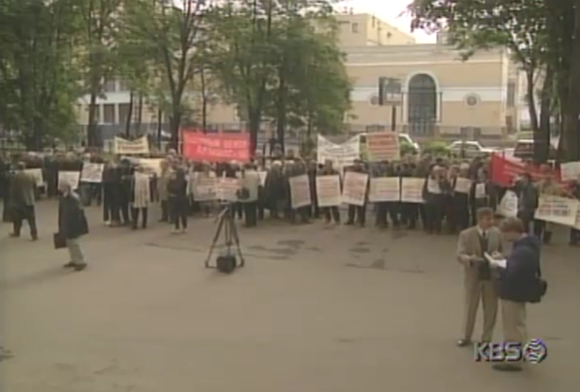
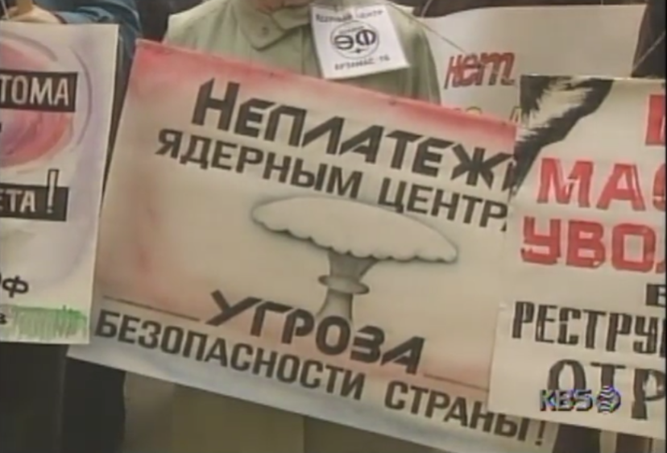

원자력산업노조 "정부가 월급을 계속 주지 않는다면 제 2의 체르노빌 사태를 각오해야 할 것"


원자력산업노조 "정부가 월급을 계속 주지 않는다면 제 2의 체르노빌 사태를 각오해야 할 것"
ㅆㅂ 돈을 안주잖아
Непладежи - Угроза безопасности страны!
임금체불은 국가안보에 대한 위협이다!
정도의 번역인데 체르노빌까진 아니고... 90년대 러시아가 디폴트나고 개판이긴 했는데 불과 얼마전에 원전 터져서 개난리났던거 생각하면 죤나 강경한 어조였던거지.
디럭스봄바~
월급을 아예 안줘서 파업은 ㅇㅈ 아니냐